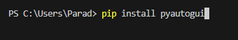
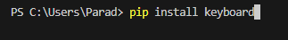
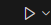

print("Open visual studio as admin, install python and run these commands:")
print("pip install pyautogui and pip install keyboard")


Press run code

Conclusion:
print("This will run the code and open up the start button, press the start button to use the script")
print("This is made for 1080p, and with the taskbar on hide or fullscreen, press f11")
print("You will need to have discord open when u run the code or it won't work")
print("and open it when you start the code after starting with the button")